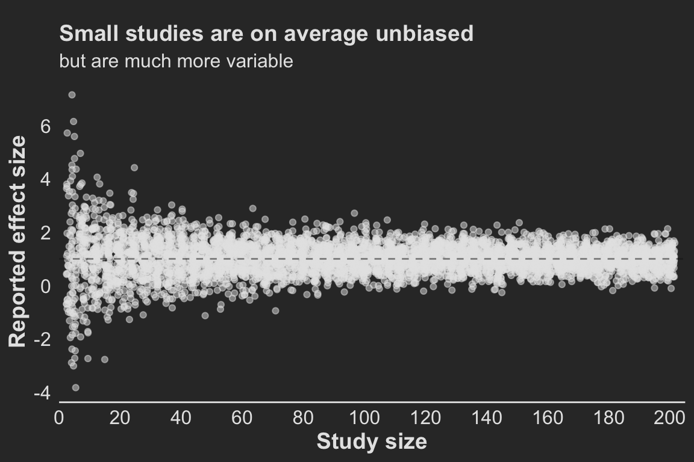
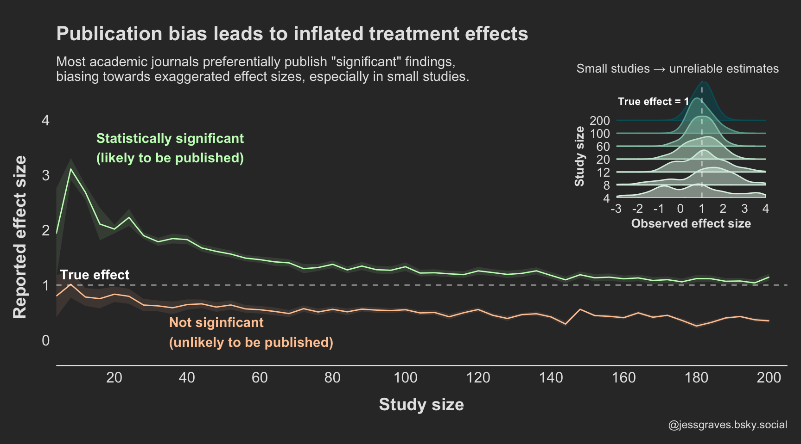

The influence of publication bias on estimating effect sizes.
simulation
effect sizes
publication bias
Author
Jess Graves
Published
March 24, 2025
Modified
June 4, 2025
Save a hot dog for me
The goal of most scientific & statistical endeavors is to identify if some variable or feature influences an outcome or disease state – and perhaps more importantly, by how much.
This “how much” is called the “treatment effect”, or “effect size” more generally. I’ll use effect size here. Effect sizes are the “so what” of scientific discovery. Just because we see a difference doesn’t mean that difference is meaningful – or, the treatment won’t dramatically change the odds of the outcome occurring.
But, for the sake of discussing the “so what”, let’s break it down. 1 hot dog = 36 mins / 60 mins per hour / 24 hours per day / 365 days per year = 6.849315e-05 years of life. So, how many hot dogs do you need to eat to lose 1 year of life? 14,600.
Let’s say you live to be 75 years old. Then you need to eat 195 hot dogs per year for75 years. You’d need to be averaging one hot dog every other day for 75 years.
🌭 So, I won’t be changing my hot dog eating habits. I am not eating nearly enough hot dogs to make a meaningful dent in my lifespan. Plus, I love hot dogs.
Anyway! Back to the point.
Just because it’s published doesn’t mean it’s real
Randomized control trials (RCTs) are generally considered the gold standard, or at least a good approximation of the gold standard, for capturing and measuring real treatment effects.
We need accurate treatment effect estimates to:
Actually improve health outcomes
Guide clinical practice
Accurately test new treatments
We want to do the best science all the time! But RCTs have many resources and constraints to balance, like: financial and human resources, how many patients to enroll, safety, ethics (stopping trials early due to benefit or harm), regulatory risk, etc.
As I see it there are two major threats to accurate effect size estimation in RCTs:
Publication Bias – Journals largely publish significant results. People tend to want to read about things “that work” over things “that don’t”. The consequence of this is that journals end up only publishing a subset of the studies actually conducted on a given treatment. And not even a random subset, a systematic subset of largely significant findings. By the generally acceptable Type I error rate (5%), approximately 5% of all studies may falsely identify an effect when none exists.
Publication bias parallels many cognitive biases we have to combat when exploring data and interpreting results. We tend to think that if we see p < 0.05, it means we have attained something real.
This is not specific to RCTs – it’s a threat to all published studies.
Interim Analyses (or small sample sizes) - As mentioned above, sometimes there is good motivation to stop a study early. In very high stakes trials, like cancer trials, stopping a trial early could mean reducing the time that the placebo group doesn’t receive an effective treatment. As a simplification, studies can stop early when their pre-determined statistical analysis performed at “interim” shows statistically significant differences. However, meta-analyses have shown that trials that stop early due to early detection of an effect often overestimates those differences, because smaller, more realistic effects take longer to reach significance.
Figure 1. Figure 3 from Bassler et al. (2010) – Stopping Randomized Trials Early for Benefit and Estimation of Treatment Effects
How do small samples & publication bias work together to distort effect sizes?
First, to make a distinction – there are two different definitions of bias. The colloquial version, like the one used in the phrase “Publication Bias”, and the other is the statistical version.
Statistical Bias: Systematic difference in the true effect and the one that is observed, due to factors such as improper study design, data collection, or selective reporting, which can lead to exaggerated or misleading conclusions.
Here I’ll use a simple simulation to ask how the following lead to or influence bias in observed treatment effects:
Sample size
Publication bias (reporting only p < 0.05 studies)
The simulation framework is simple. We’re going to assume that we have two groups that are different from each other. We’ll:
Generate \(N\) observations of a random variable ( \(y_1\)) that is normally distributed with a mean ( \(\mu_1\)) and standard deviation ( \(\sigma\))
Pre-determine our effect size ( \(\Delta\) )
Generate another set of \(N\) observations of another random variable ( \(y_2\)) that is normally distributed with a mean that is offset by our pre-determined effect size plus a little random noise ( \(\mu_2 = \mu_1 + \Delta + \mathcal{N}(0, 0.25)\) ) with the same standard deviation ( \(\sigma\), to make our lives even simpler)
The little bit of random noise (\(\mathcal{N}(0, 0.25)\)) added is meant to sort of reflect noise in ✨the real world✨.
Perform a two-sample t-test (with equal variances), and obtain:
The observed effect size ( \(\hat{\Delta}\) ) , and it’s 95% CI
The p-value for that test
Repeat 🔁 this process 100 times across a range of sample sizes.
# Define sweep and simulation setupn_sweep <-seq(2, 100, by =2)n_sims <-100# Create a cross grid of simulationsresult_data <-crossing(n_per_group = n_sweep, sim =1:n_sims) %>%mutate(delta =NA_real_, lower =NA_real_,upper =NA_real_,pvalue =NA_real_,n =NA_integer_,true_delta =NA_real_)
Setting the simulation parameters
Now, let’s define \(mu_1\), \(\sigma\), and \(\Delta\):
\(\mu_1 = 5\)
\(\sigma = 2\)
\(\Delta = 1 + \mathcal{N}(0, 0.25)\)
We’re going to test this in sample sizes from 2–100 per group, and each run will be simulated 100 times.
Looping over Ns
# Perform simulationsset.seed(666) # 😈# True parameters for the simulationdelta <-1mu1 <-5sd <-2for(i in1:nrow(result_data)){ true_delta <- delta +rnorm(1, 0, 0.25) # Introduce some variability in true_delta mu2 <- mu1 + true_delta # Adjust mu2 based on the true delta n_per_group <- result_data$n_per_group[i] # Number of samples per group sim_results <-simulate(mu1, mu2, sd, n_per_group) result_data[i, colnames(sim_results)] <- sim_results result_data$n[i] <- n_per_group *2# Total sample size (n_per_group * 2) result_data$true_delta[i] <- true_delta # Store true delta}result_data$bias <--1*result_data$delta - result_data$true_delta
Results
Effects in small studies are wildly variable
Studies with small sample sizes (small numbers of patients) produce much more variable treatment effect estimates and are therefore much more likely to show large differences when they are in fact small (Figure 2 ).
Now, on average, across all studies, these effects average out to be around the true effect (1). So, if all studies on this effect were published, we could estimate that the treatment effect was around 1 by taking the average effects across all of these studies – no matter the size of the study! So long as we have many of those studies!
So, to answer the first question ( Section 3 ) : “How much does sample size influence bias in treatment effect?”. The answer, strictly based on the statistical definition of a biased estimator(which is the difference in the expected values), the answer is actually none.
Note that this is contingent entirely on a completely unbiased selection of studies.
But the variance is incredibly high. And this variance is problematic. Because we live in a finite world, with finite studies and resources, each study is a random draw from that highly variable distribution, leading to a treatment estimate that we are inclined to believe is “real”.
And that is where publication bias comes in to really mess things up.
Code
points <- result_data |>ggplot(aes(x=n, y=-1*delta)) +geom_point(color = text, alpha =0.5, position =position_jitter()) +labs(x ='Study size', y='Reported effect size',title ='Small studies are on average unbiased',subtitle ='but are much more variable' ) +geom_hline(yintercept =1, color ='grey10', alpha=0.5, linetype =2) +scale_y_continuous(breaks = scales::pretty_breaks(5)) +scale_x_continuous(breaks = scales::pretty_breaks(10), expand =c(0, 0), limits =c(0, 205)) +theme(plot.title =element_text(#hjust=1, margin =margin(10, 0, 5, 0)),plot.subtitle =element_text(size=12),axis.line.y =element_blank())points

Figure 2. For small sample sizes, the observed treatment effect is highly variable and often extreme but on average reflects the true effect
Publication bias + small samples = big bias
However, as mentioned above, most journals do not want to publish every study because non-significant findings are not attention-grabbing enough. So, instead, what we are generally seeing in the scientific literature is only the significant studies.
Figure 3 shows what treatment effects we see, assuming only the significant findings are published.
So, not only are results more variable in small studies, but they are more likely to be extreme values if they do in fact reach statistical significance. Increasing the study size reduces this bias, but we still see consistent over estimation even in larger sample sizes.
Aggregating results
# Summarize the delta for each sample size (n_per_group)delta_summary <- result_data |>group_by(n_per_group, pvalue <0.05) |>summarize(mean_delta =mean(delta),sd_delta =sd(delta),delta_95_ci_lower = mean_delta -1.96* sd_delta /sqrt(n_sims),delta_95_ci_upper = mean_delta +1.96* sd_delta /sqrt(n_sims) )
Figure code
# colors <- diverging_hcl(2, 'Green-Orange') grns <-sequential_hcl(2, 'TealGrn') orngs <-diverging_hcl(2, 'Green-Orange') colors <-c(grns[2], orngs[2])colors2 <-lighten(colors, amount =0.5)p2 <- delta_summary |>mutate(significance =factor(if_else(`pvalue < 0.05`, 'Likely to be published (p<0.05)','Unlikely to be published (p>0.05)'), levels =c('Likely to be published (p<0.05)','Unlikely to be published (p>0.05)'))) |>ggplot(aes(x = n_per_group*2, y =abs(mean_delta))) +geom_line(aes(color = significance)) +geom_ribbon(aes(ymin =abs(delta_95_ci_lower), ymax =abs(delta_95_ci_upper), fill = significance), alpha=0.1) +geom_hline(yintercept =1, linetype=2, color ='white', alpha =0.5) +scale_fill_manual(values = colors2) +scale_color_manual(values = colors2) +scale_x_continuous(breaks = scales::pretty_breaks(10), limits =c(4, 205),expand=c(0, 0)) +scale_y_continuous(breaks = scales::pretty_breaks(5), limits =c(-0.25, 4)) +theme(legend.position ='none', plot.title =element_text(hjust=0, size =16,margin =margin(10, 0, 10, 0)), plot.subtitle =element_text(hjust=0, size =11,margin =margin(0, 0, 20, 0) ), axis.line.y =element_blank(), axis.title.x =element_text(margin =margin(10, 0, 0, 10)), axis.title.y =element_text(margin =margin(0, 10, 10, 0)), plot.caption =element_text(color = text) ) +labs(color ='', fill ='', x ='Study size', y ='Reported effect size', title ='Publication bias leads to inflated treatment effects', subtitle ='Most academic journals preferentially publish "significant" findings,\nbiasing towards exaggerated effect sizes, especially in small studies.', caption ='@jessgraves.bsky.social') +annotate(geom='text',label =c('Statistically significant\n(likely to be published)', 'Not siginficant\n(unlikely to be published)', 'True effect'),color =c(colors2, 'white'), y=c(3.5, 0.15, 1.2), x=c(15, 35, 5), hjust=0, fontface ='bold')pal <-"Mint"# pal <- "OrRd"p1_v2 <- result_data |>filter(n %in%c(4, 8, 12, 20, 60, 100, 200)) |>ggplot(aes(y =factor(n), x=-1*delta, color = n, fill = n)) +geom_density_ridges2(alpha=0.5, scale=3) +scale_fill_continuous_sequential(palette = pal) +scale_color_continuous_sequential(palette = pal) +scale_x_continuous(expand=c(0, 0), breaks = scales::pretty_breaks(5), limits =c(-3, 4)) +scale_y_discrete(expand=c(0, 0)) +labs(x='Observed effect size', y='Study size', subtitle ='Small studies → unreliable estimates' ) +theme(legend.position ='none', axis.line =element_blank(),axis.text =element_text(size=10), axis.title.x =element_text(#margin = margin(10, 0, 0, 10), size =10), axis.title.y =element_text(#margin = margin(0, 10, 10, 0),size =10, hjust=0.2), plot.subtitle =element_text(color = text, size =10,hjust =0.75,# margin=margin(5, 0, 20, 0) )) +geom_vline(xintercept =1, color ='white', linetype =2, alpha =0.5) +annotate(geom='text', size=3,label ='True effect = 1',y=8.5, x=-1.25, # hjust=-1.25, color ='white', fontface ='bold')
Code
final_fig <- p2 +inset_element(p1_v2, left =0.7, right =0.98, top =1.2, bottom =0.5) final_figggsave('preview-image.png', final_fig, units ='cm', width =9*3, height =7*2)

Figure 3. Publication bias exaggerates treatment effects, particularly when studies are small
Read with caution
Publication bias poses substantial problems to science, both when treatment effects are real and not.
When there are real effects, we need consistently huge studies to approach unbiased estimates. This is a huge cost to study administrators and patients.
While not presented here, in the case of no real effects, publication bias would encourage acceptance of false positives (those studies that happen to fall into the Type I error).
So, as we go about reading papers and designing studies, we should think critically about what we are powering, what is being reported, and what it actually means.
Seems to me the only way to genuinely address this is to conduct many studies on the same topic. Replicate, replicate, replicate. And yet… often papers are rejected because they are not “novel” 😵
References
Bassler, Dirk, Matthias Briel, Victor M Montori, Melanie Lane, Paul Glasziou, Qi Zhou, Diane Heels-Ansdell, et al. 2010. “Stopping Randomized Trials Early for Benefit and Estimation of Treatment Effects: Systematic Review and Meta-Regression Analysis.”Jama 303 (12): 1180–87.
Fujian, S, L Hooper, and KL Yoon. 2013. “Publication Bias: What Is It? How Do We Measure It? How Do We Avoid It.”Open Access Journal of Clinical Trials, 571 580.
Stylianou, Katerina S, Victor L Fulgoni III, and Olivier Jolliet. 2021. “Small Targeted Dietary Changes Can Yield Substantial Gains for Human Health and the Environment.”Nature Food 2 (8): 616–27.
Citation
BibTeX citation:
@online{graves2025,
author = {Graves, Jess},
title = {Small Samples, Big Biases},
date = {2025-03-24},
url = {https://JessLGraves.github.io/posts/2025-03-22-small-samples-big-effects/},
langid = {en}
}
---title: "Small samples, big biases"description: "The influence of publication bias on estimating effect sizes."author: - name: Jess Gravesdate: 03-24-2025date-modified: last-modifiedexecute-dir: projectcrossref: fig-title: '**Figure**' tbl-title: '**Table**' fig-labels: arabic tbl-labels: arabic title-delim: "."link-citations: trueexecute: echo: true warning: false message: falsecategories: [simulation, effect sizes, publication bias] # self-defined categoriesimage: preview-image.pngdraft: false bibliography: references.bibnocite: | @*# csl: statistics-in-biosciences.cslbibliographystyle: apacitation: trueformat: htmleditor: visual---## Save a hot dog for meThe goal of most scientific & statistical endeavors is to identify if some variable or feature influences an outcome or disease state – and perhaps more importantly, by how much.This "how much" is called the "treatment effect", or "effect size" more generally. I'll use effect size here. Effect sizes are the "so what" of scientific discovery. Just because we see a difference doesn't mean that difference is meaningful – or, the treatment won't dramatically change the odds of the outcome occurring.One of my favorite examples is the finding that [eating one hot dog will result in 36 minutes off your lifespan](https://sph.umich.edu/news/2021posts/small-changes-in-diet-could-help-you-live-healthier-more-sustainably.html)[@stylianou2021small]. No hard feelings to the authors, there's no doubt that hot dogs are not great for your health.But, for the sake of discussing the "so what", let's break it down. 1 hot dog = 36 mins / 60 mins per hour / 24 hours per day / 365 days per year = 6.849315e-05 years of life. So, how many hot dogs do you need to eat to lose 1 year of life? 14,600.Let's say you live to be 75 years old. Then you need to eat 195 hot dogs per year *for* *75 years.* You'd need to be averaging one hot dog every other day *for 75 years*.🌭 So, I won't be changing my hot dog eating habits. I am not eating nearly enough hot dogs to make a meaningful dent in my lifespan. Plus, I love hot dogs.Anyway! Back to the point.## Just because it's published doesn't mean it's realRandomized control trials (RCTs) are generally considered the gold standard, or at least a good approximation of the gold standard, for capturing and measuring real treatment effects.We need accurate treatment effect estimates to:1. Actually improve health outcomes2. Guide clinical practice3. Accurately test new treatmentsWe want to do the best science all the time! But RCTs have many resources and constraints to balance, like: financial and human resources, how many patients to enroll, safety, ethics (stopping trials early due to benefit or harm), regulatory risk, etc.As I see it there are two major threats to accurate effect size estimation in RCTs:1. **Publication Bias** – Journals largely publish significant results. People tend to want to read about things "that work" over things "that don't". The consequence of this is that journals end up only publishing a subset of the studies actually conducted on a given treatment. And not even a random subset, a systematic subset of largely significant findings. By the generally acceptable [Type I error rate](https://en.wikipedia.org/wiki/Type_I_and_type_II_errors) (5%), approximately 5% of all studies may falsely identify an effect when none exists. - 📑 A nice read on what publication bias means, and how to measure it [@fujian2013publication] - Publication bias parallels many cognitive biases we have to combat when exploring data and interpreting results. We tend to think that if we see p \< 0.05, it means we have attained something *real*. - This is not specific to RCTs – it's a threat to all published studies.2. **Interim Analyses** (or small sample sizes) - As mentioned above, sometimes there is good motivation to stop a study early. In very high stakes trials, like cancer trials, stopping a trial early could mean reducing the time that the placebo group *doesn't* receive an effective treatment. As a simplification, studies can stop early when their pre-determined statistical analysis performed at "interim" shows statistically significant differences. However, meta-analyses have shown that trials that stop early due to early detection of an effect often overestimates those differences, because smaller, more realistic effects take longer to reach significance. - 📑 I really like this paper by Bassler et al 2010 [@bassler2010stopping], see @fig-bassler from the paper. - This would apply to any prospective cohort study too - Study size can also be an arguable surrogate for interim analysis, because in general, they occur *before* a certain number of events are attained.[{#fig-bassler fig-alt="Scatter plot of treatment effects (Relative Risks) on y axis and number of outcomes on x axis. Treatment effects are large for small samples, and decrease as samples increase."}](https://d1wqtxts1xzle7.cloudfront.net/57167273/Stopping_randomized_trials_early_for_ben20180810-22461-1gn0lby-libre.pdf?1533941184=&response-content-disposition=inline%3B+filename%3DStopping_Randomized_Trials_Early_for_Ben.pdf&Expires=1742759424&Signature=Ea5NahUKQZxPYv2udJq9TbFeg6kzI4PwbJGoaZTmsQa6rQtl4-eYyOaBy6sCqEzYVhiC2nJ56swIemJCp1ul4XHPgE3x7HXksRPewlob~Hnq5hG8xyAOMZTaLulrBRlesB6JTYhO2oFDsyV9d2E1IpYLuiyEzYJkXEo6FD45y6MqBRTpXXgr04~Utw9QqfSqEpeOxhIKzQD9gGqaARH~OBSgm-WDXsHAuebpoaxy~EcPrftJZu98n0LGkKoBFp3lQGrVeFCgLdjmlXT-U2LAcCIUVMuEXoQlVwCf8-bTSlM17qkUl-BN9exuNFvNnfnnyFHwnYH7Fqmy4Isf9Q0ZqA__&Key-Pair-Id=APKAJLOHF5GGSLRBV4ZA)## How do small samples & publication bias work together to distort effect sizes? {#sec-questions}First, to make a distinction – there are two different definitions of bias. The colloquial version, like the one used in the phrase "Publication Bias", and the other is the statistical version.::: {.callout-note appearance="minimal"}[**Statistical Bias**](https://en.wikipedia.org/wiki/Bias_of_an_estimator#Definition): Systematic difference in the true effect and the one that is observed, due to factors such as improper study design, data collection, or selective reporting, which can lead to exaggerated or misleading conclusions.:::Here I'll use a simple simulation to ask how the following lead to or influence bias in observed treatment effects:- Sample size- Publication bias (reporting only p \< 0.05 studies)- Sample size x Publication bias```{r}#| code-summary: Librarieslibrary(patchwork)library(tidyverse)library(ggridges)library(colorspace)library(patchwork)background <-'grey20'text <-'grey90'my_theme <-theme_classic() +theme(axis.text =element_text(size=12, color=text), axis.title =element_text(size=14, color=text, face='bold', margin=margin(20, 20, 20, 20)), legend.text =element_text(size=12, color=text), legend.title =element_text(size=14, color=text), strip.text =element_text(size=12, color=text),plot.title =element_text(color = text, size=14, face ='bold'),plot.subtitle =element_text(color = text, size =12),plot.background =element_rect(color = background, fill = background), panel.background =element_rect(color = background, fill = background),legend.background =element_rect(color = background, fill = background), axis.line =element_line(color = text), axis.ticks =element_blank())theme_set(my_theme)```### Simulation methodsThe simulation framework is simple. We're going to assume that we have two groups that are different from each other. We'll:1. Generate $N$ observations of a random variable ( $y_1$) that is normally distributed with a mean ( $\mu_1$) and standard deviation ( $\sigma$)2. Pre-determine our effect size ( $\Delta$ )3. Generate another set of $N$ observations of another random variable ( $y_2$) that is normally distributed with a mean that is offset by our pre-determined effect size plus a little random noise ( $\mu_2 = \mu_1 + \Delta + \mathcal{N}(0, 0.25)$ ) with the same standard deviation ( $\sigma$, to make our lives even simpler) - The little bit of random noise ($\mathcal{N}(0, 0.25)$) added is meant to sort of reflect noise in ✨the real world✨.4. Perform a two-sample t-test (with equal variances), and obtain: - The observed effect size ( $\hat{\Delta}$ ) , and it's 95% CI - The p-value for that testRepeat 🔁 this process 100 times across a range of sample sizes.```{r}#| code-summary: Data generating and testing function#| code-fold: falsesimulate <-function(mu1, mu2, sd, n_per_group){ y1 <-rnorm(n_per_group, mu1, sd) y2 <-rnorm(n_per_group, mu2, sd) test <-t.test(y1, y2, var.equal =TRUE) p <- test$p.value delta <-mean(y1) -mean(y2) ci <-as.numeric(test$conf.int) results <-tibble(delta = delta, lower = ci[1],upper = ci[2], pvalue = p)return(results)}``````{r}#| code-summary: Sweep set up# Define sweep and simulation setupn_sweep <-seq(2, 100, by =2)n_sims <-100# Create a cross grid of simulationsresult_data <-crossing(n_per_group = n_sweep, sim =1:n_sims) %>%mutate(delta =NA_real_, lower =NA_real_,upper =NA_real_,pvalue =NA_real_,n =NA_integer_,true_delta =NA_real_)```### Setting the simulation parametersNow, let's define $mu_1$, $\sigma$, and $\Delta$:- $\mu_1 = 5$- $\sigma = 2$- $\Delta = 1 + \mathcal{N}(0, 0.25)$We're going to test this in sample sizes from 2–100 per group, and each run will be simulated 100 times.```{r}#| code-summary: Looping over Ns # Perform simulationsset.seed(666) # 😈# True parameters for the simulationdelta <-1mu1 <-5sd <-2for(i in1:nrow(result_data)){ true_delta <- delta +rnorm(1, 0, 0.25) # Introduce some variability in true_delta mu2 <- mu1 + true_delta # Adjust mu2 based on the true delta n_per_group <- result_data$n_per_group[i] # Number of samples per group sim_results <-simulate(mu1, mu2, sd, n_per_group) result_data[i, colnames(sim_results)] <- sim_results result_data$n[i] <- n_per_group *2# Total sample size (n_per_group * 2) result_data$true_delta[i] <- true_delta # Store true delta}result_data$bias <--1*result_data$delta - result_data$true_delta```## Results### Effects in small studies are *wildly variable*Studies with small sample sizes (small numbers of patients) produce much more variable treatment effect estimates and are therefore much more likely to show large differences when they are in fact small (@fig-sample-sizes ).Now, on average, across *all studies*, these effects average out to be around the true effect (1). So, if all studies on this effect were published, we could estimate that the treatment effect was around 1 by taking the average effects across all of these studies – no matter the size of the study! So long as we have many of those studies!So, to answer the first question ( @sec-questions ) : *"How much does sample size influence bias in treatment effect?"*. The answer, strictly based on the [statistical definition of a biased estimator](https://en.wikipedia.org/wiki/Bias_of_an_estimator#Definition)(which is the difference in the expected values), the answer is actually *none.*::: {.callout-warning appearance="minimal"}Note that this is contingent entirely on a completely unbiased selection of studies.:::But the variance is incredibly high. And this variance is problematic. Because we live in a finite world, with finite studies and resources, each study is a random draw from that highly variable distribution, leading to a treatment estimate that we are inclined to believe is "real".And that is where publication bias comes in to really mess things up.```{r}#| label: fig-sample-sizes#| fig-height: 4#| fig-width: 6#| fig-cap: For small sample sizes, the observed treatment effect is highly variable and often extreme but on average reflects the true effectpoints <- result_data |>ggplot(aes(x=n, y=-1*delta)) +geom_point(color = text, alpha =0.5, position =position_jitter()) +labs(x ='Study size', y='Reported effect size',title ='Small studies are on average unbiased',subtitle ='but are much more variable' ) +geom_hline(yintercept =1, color ='grey10', alpha=0.5, linetype =2) +scale_y_continuous(breaks = scales::pretty_breaks(5)) +scale_x_continuous(breaks = scales::pretty_breaks(10), expand =c(0, 0), limits =c(0, 205)) +theme(plot.title =element_text(#hjust=1, margin =margin(10, 0, 5, 0)),plot.subtitle =element_text(size=12),axis.line.y =element_blank())points```### Publication bias + small samples = big biasHowever, as mentioned above, most journals do not want to publish every study because non-significant findings are not attention-grabbing enough. So, instead, what we are generally seeing in the scientific literature is only the significant studies.@fig-pub-bias shows what treatment effects we see, assuming only the significant findings are published.So, not only are results more variable in small studies, but they are more likely to be extreme values if they do in fact reach statistical significance. Increasing the study size reduces this bias, but we still see consistent over estimation even in larger sample sizes.```{r}#| code-summary: Aggregating results# Summarize the delta for each sample size (n_per_group)delta_summary <- result_data |>group_by(n_per_group, pvalue <0.05) |>summarize(mean_delta =mean(delta),sd_delta =sd(delta),delta_95_ci_lower = mean_delta -1.96* sd_delta /sqrt(n_sims),delta_95_ci_upper = mean_delta +1.96* sd_delta /sqrt(n_sims) )``````{r}#| code-summary: Figure code# colors <- diverging_hcl(2, 'Green-Orange') grns <-sequential_hcl(2, 'TealGrn') orngs <-diverging_hcl(2, 'Green-Orange') colors <-c(grns[2], orngs[2])colors2 <-lighten(colors, amount =0.5)p2 <- delta_summary |>mutate(significance =factor(if_else(`pvalue < 0.05`, 'Likely to be published (p<0.05)','Unlikely to be published (p>0.05)'), levels =c('Likely to be published (p<0.05)','Unlikely to be published (p>0.05)'))) |>ggplot(aes(x = n_per_group*2, y =abs(mean_delta))) +geom_line(aes(color = significance)) +geom_ribbon(aes(ymin =abs(delta_95_ci_lower), ymax =abs(delta_95_ci_upper), fill = significance), alpha=0.1) +geom_hline(yintercept =1, linetype=2, color ='white', alpha =0.5) +scale_fill_manual(values = colors2) +scale_color_manual(values = colors2) +scale_x_continuous(breaks = scales::pretty_breaks(10), limits =c(4, 205),expand=c(0, 0)) +scale_y_continuous(breaks = scales::pretty_breaks(5), limits =c(-0.25, 4)) +theme(legend.position ='none', plot.title =element_text(hjust=0, size =16,margin =margin(10, 0, 10, 0)), plot.subtitle =element_text(hjust=0, size =11,margin =margin(0, 0, 20, 0) ), axis.line.y =element_blank(), axis.title.x =element_text(margin =margin(10, 0, 0, 10)), axis.title.y =element_text(margin =margin(0, 10, 10, 0)), plot.caption =element_text(color = text) ) +labs(color ='', fill ='', x ='Study size', y ='Reported effect size', title ='Publication bias leads to inflated treatment effects', subtitle ='Most academic journals preferentially publish "significant" findings,\nbiasing towards exaggerated effect sizes, especially in small studies.', caption ='@jessgraves.bsky.social') +annotate(geom='text',label =c('Statistically significant\n(likely to be published)', 'Not siginficant\n(unlikely to be published)', 'True effect'),color =c(colors2, 'white'), y=c(3.5, 0.15, 1.2), x=c(15, 35, 5), hjust=0, fontface ='bold')pal <-"Mint"# pal <- "OrRd"p1_v2 <- result_data |>filter(n %in%c(4, 8, 12, 20, 60, 100, 200)) |>ggplot(aes(y =factor(n), x=-1*delta, color = n, fill = n)) +geom_density_ridges2(alpha=0.5, scale=3) +scale_fill_continuous_sequential(palette = pal) +scale_color_continuous_sequential(palette = pal) +scale_x_continuous(expand=c(0, 0), breaks = scales::pretty_breaks(5), limits =c(-3, 4)) +scale_y_discrete(expand=c(0, 0)) +labs(x='Observed effect size', y='Study size', subtitle ='Small studies → unreliable estimates' ) +theme(legend.position ='none', axis.line =element_blank(),axis.text =element_text(size=10), axis.title.x =element_text(#margin = margin(10, 0, 0, 10), size =10), axis.title.y =element_text(#margin = margin(0, 10, 10, 0),size =10, hjust=0.2), plot.subtitle =element_text(color = text, size =10,hjust =0.75,# margin=margin(5, 0, 20, 0) )) +geom_vline(xintercept =1, color ='white', linetype =2, alpha =0.5) +annotate(geom='text', size=3,label ='True effect = 1',y=8.5, x=-1.25, # hjust=-1.25, color ='white', fontface ='bold')``````{r}#| label: fig-pub-bias#| fig-cap: Publication bias exaggerates treatment effects, particularly when studies are small#| fig_height: 7#| fig-width: 9final_fig <- p2 +inset_element(p1_v2, left =0.7, right =0.98, top =1.2, bottom =0.5) final_figggsave('preview-image.png', final_fig, units ='cm', width =9*3, height =7*2)```## Read with cautionPublication bias poses substantial problems to science, both when treatment effects are real and not.1. When there are real effects, we need consistently huge studies to approach unbiased estimates. This is a huge cost to study administrators and patients.2. While not presented here, in the case of no real effects, publication bias would encourage acceptance of false positives (those studies that happen to fall into the Type I error).So, as we go about reading papers and designing studies, we should think critically about what we are powering, what is being reported, and what it actually means.Seems to me the only way to genuinely address this is to conduct *many studies* on the *same topic*. Replicate, replicate, replicate. And yet... often papers are rejected because they are not "novel" 😵